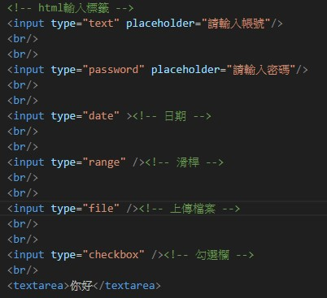

常用標籤種類
常見標籤:
h1~h6 > 標題
p > 敘述內文
b >文字粗體
i > 文字斜體
hr > 分隔線
br > 換行
使用方式如下圖
a > 連結
img > 圖片
video > 影片
iframe > 嵌入Youtube影片
href > 引用連結
src > 引入來源地址
使用方式如下圖
ul,ol > 列表 (ul列點排序 ol數字、英文...排序)
li > 列表項目
table > 表格
tr > 垂直列
td > 水平欄
使用方式如下圖
div & span > html容器 可以一次改動容器內標籤
div > 不管文字寬度都是占用一整行
span > 隨文字大小決定佔用空間
使用方法如下圖
input > html輸入標籤
type > 種類
placeholder > 提示文字
textarea > 輸入文字區塊
使用方式如下圖

下面為學習影片